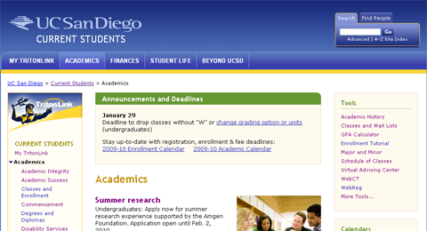
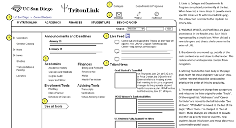
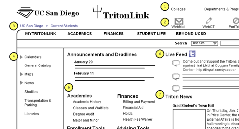
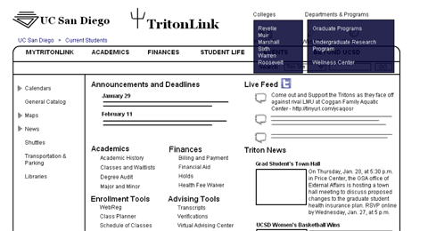
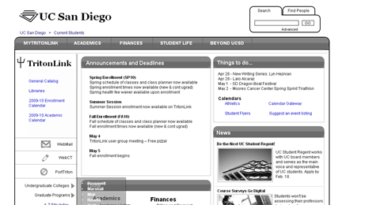

TritonLink
UCSD Student Portal Website

The old layout was in need of a makeover for both aesthetics and IA.

I created wireframes to illustrate the changes that would be implemented.





Role Web Usability Intern
Employer UCSD Campus Web Office
Date Mar 2010 - Jun 2010
Methods web analytics, focus groups, wireframing
Wireframes (pdf)
Heuristic Evaluation (pdf)
Current Website
Large universities with loose-knit departments have difficulty consolidating and delivering information. UCSD deals with this by using web solutions, both to organize information for internal staff as well as delivering information to students and faculty. While their faculty portal site received an overhaul to improve the information architecture and interface, the student portal site had remained largely unchanged. Surveys, interviews, and focus groups had indicated that students needed a better interface and restructured information architecture.
As an intern at UC San Diego's web office, I had the opportunity to redesign
the student portal site. After looking at survey responses, analytics, feedback
from focus groups and conducting a heuristic evaluation, I generated three rounds of wireframes that addressed the data. My wireframes took into account my own experiences, student needs, most accessed content, as well as university desires. Upon
receiving positive feedback from students, the final iteration was implemented into a newly
designed student portal website.
Working on projects like this at the web office served as my first experience outside of coursework (though still at a university).